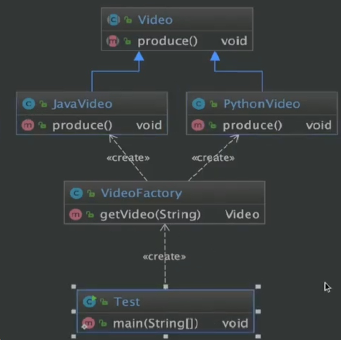
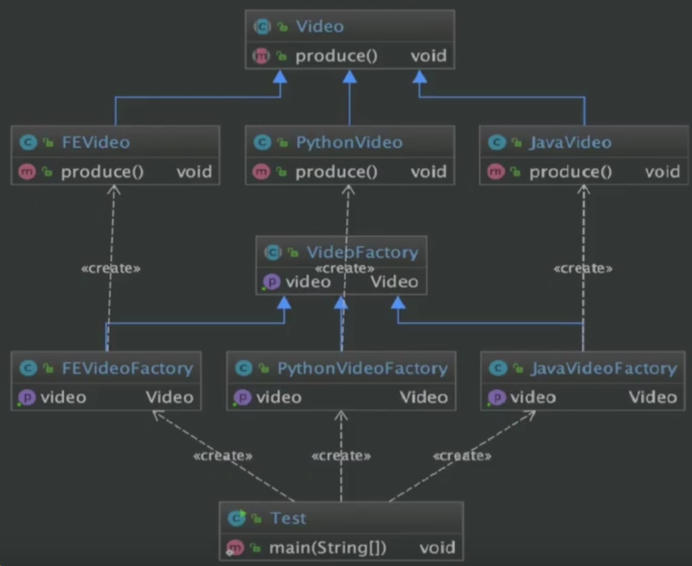
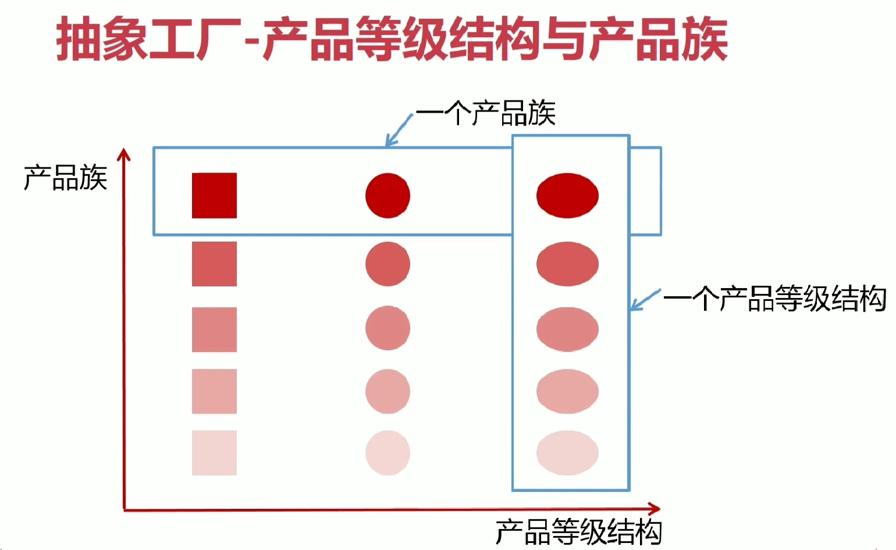
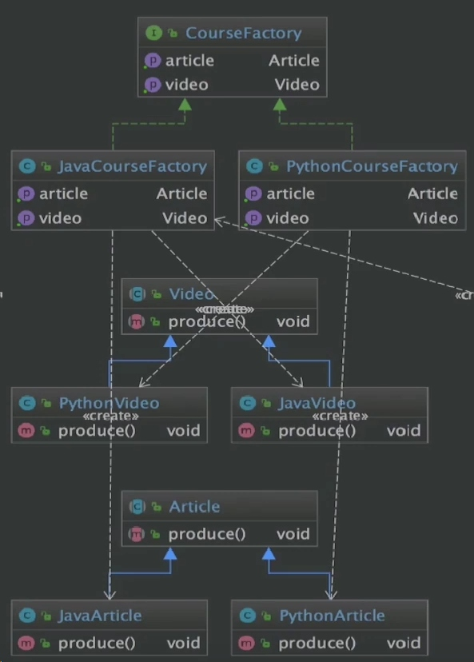
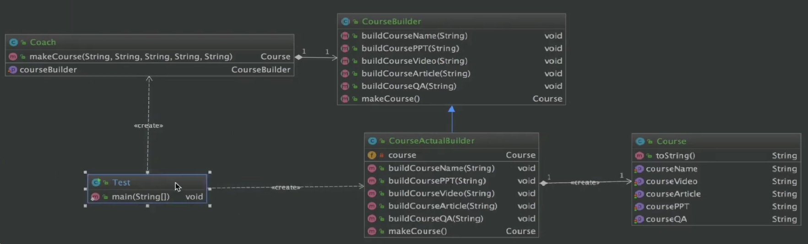

Design Patterns
Example lead - highlighted near the title
Page content
Principle 原则
开闭原则
- 一个软件实体, 如类, 模块, 函数, 应该对扩展开放, 对修改关
- 面对抽象, 接口编程
依赖倒置原则
- 高层模块不应该依赖低层模块, 二者都应该依赖其抽象
- 抽象不应该依赖细节; 细节应该依赖抽象
- 针对接口编程, 不要针对实现编程
单一职责原则
- 不要存在多于一个导致类变更的原因
- 一个类/接口/方法只负责一项职责
接口隔离原则
- 用多个专门的接口, 而不使用单一的总接口, 客户端不应该依赖它不需要的接口
- 一个类对一个类的依赖应该建立在最小的接口上
- 建立单一接口, 不要建立庞大臃肿的接口
- 尽量细化接口, 接口中的方法尽量少
- 但是也要有限度
迪米特法则
- 一个对象应该对其他对象保持最少的了解. 又叫最少知道原则.
- 尽量降低类与类之间的耦合
里氏替换原则
- 派生类（子类）对象可以在程式中代替其基类（超类）对象。
合成复用原则 Composite Reuse Principle, CRP
- 尽量使用对象组合，而不是继承来达到复用的目的。也叫：组合/聚合复用原则
- 需要慎重使用继承复用
Creational Design Pattern
Factory Pattern 工厂模式
- 简单工厂: 由一个工厂对象决定创建出哪一种产品类的实例

- 定义一个创建对象的接口, 但让实现这个接口的类来决定实例化哪个类, 工厂方法让类的实例化推迟到子类中进行

Abstract Factory Pattern 抽象工厂模式
- 提供一个创建一系列相关或者相互依赖对象的接口
- 无需指定他们具体的类
- 便于创建产品族, 而工厂模式侧重于创建产品等级


Singleton Pattern 单例模式
- 保证一个类仅有一个实例, 并提供一个全局访问点
- 私有构造器
- 线程安全
- 延迟加载
- 序列化和反序列化
- 反射
Prototype Pattern 原型模式
- 指原型实例指定创建对象的种类, 并且通过Copy这些原型创建新的对象
- 注意深克隆和浅克隆
Builder Pattern 建造者模式
- 将一个复杂对象的构建, 与它的表示分离, 使得同样的构建过程可以创建不同的表示
- 用户只需指定需要建造的类型就可以得到它们, 建造过程及细节不需要知道
